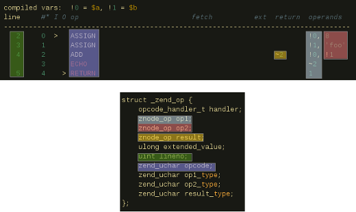
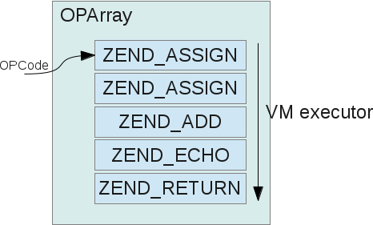
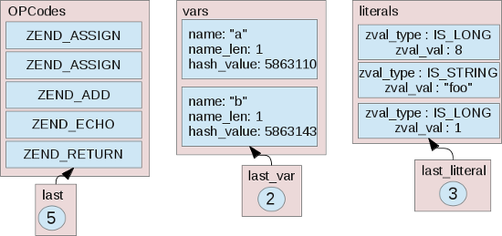

Feb 5th, 2015
PHP : an interpreted language#
PHP is often defined as a "scripting language" or an "interpreted language". What's that ?
Well, it is a language that won't turn its instructions (its syntax) directly into native machine language, but into an intermediate form, that obviously won't be directly run by the CPU (as this one wouldn't understand the instructions), but by an intermediate code base, itself being written using native machine instructions this time (we use the C language for that nowadays).
That's basically the definition of a software virtual machine. Quoting Wikipedia :
(...) process virtual machines are designed to execute a single computer program by providing an abstracted and platform-independent program execution environment. A process VM, sometimes called an application virtual machine, or Managed Runtime Environment (MRE), runs as a normal application inside a host OS and supports a single process. It is created when that process is started and destroyed when it exits. Its purpose is to provide a platform-independent programming environment that abstracts away details of the underlying hardware or operating system, and allows a program to execute in the same way on any platform.
So, the PHP language, like any interpreted language, is a program that is designed to run abstract instructions in a cross platform way, abstracting away as much of the underlying OS details as possible. This is technically speaking. It's functional domain is the web (PHP is aimed to solve Web related problems).
Other programming languages relying on a software virtual machine are (non exhaustive list) : Java, Python, C#, Ruby, Pascal, Lua, Perl, Javascript... (and many more). Basically, every language that is not directly and fully turned into native machine instructions, makes use of a software virtual machine. Software virtual machines are however allowed - to boost their own performance - to turn some of (but not all) the language instructions they support to direct host machine instructions : this process is called "JIT compilation". PHP does not make use of JIT compilation at the time the lines you are reading are written, but experimentations have been done and such an idea has always been analyzed/talked about.
We nowadays use software virtual machine because we don't want to write those thousands of C lines of code everytime we want to say "Hello" on the user screen. Software virtual machines advantages over native platform programming :
- Ease of use and speed of development
- Very often if not in 100% cases : automatic memory management
- Abstracts target data types, no low level maths to figure out, no code to rewrite when switching target hardware, etc.
And we could write some drawbacks :
- No accuracy on memory management or more generally of global resources usage (trust the VM or die)
- Slower than native code : more CPU cycles needed to achieve the same task (JIT tries to narrow the gap, but will never make it disappear)
- May abstract too many things, often the programmer is too far from its hardware, which leads to diffculties in understanding the exact impact of the code, especially when the load raises
The last line of drawbacks is why I write such an article. The more the time passes, the more I note this fact : less and less people master the exact impact of the code they write onto the hardware and the network, which in my opinion is not a good thing. This often makes me think about someone connecting two wires together, crossing his fingers for the overall system behind him not to blow up. It's not about mastering the whole chain, which is not humanely possible, but at least know what we talk about.
So, let me try to show you what PHP does with the code you write. And when you'll have that good understanding, you can extract it and apply it to any other "interpreted" programming languages, as those may be designed a little bit differently from PHP, they all share a very huge part of the concepts. Usually, the main differences you'll find studying other interpreted languages is about using JIT or not, parallelism of the VM code (using threads mainly, PHP does not make use of any parallelism technic) and memory pooling / garbage collecting algorithms.
The Zend software virtual machine#
The main virtual machine (Zend Virtual Machine) is divided into two huge parts, which are tied together :
- A compile stack : understands and turns the PHP language instructions into an intermediate form of any abstract kind
- An execution stack : takes the intermediate form of code instructions and run them through a dedicated engine, itself written in C or assembly
We won't talk about part 1 here, but concentrate on the Zend Virtual machine executor, a very interesting piece of software, highly optimized, crossplatform, runtime hookable, technically highly challenging. Several thousands of C lines of code are involved in this component design, which is reworked partly at every new PHP version release.
We'll assume PHP 5.6 for our examples.
I admit that there are so many things to say, that I had difficulties on where to start, what to show you and in which order for this article. This is a pretty uncommon situation I'm not really used to, but I can't shrink this blog subject into several ones, because all the pieces are really tied together. As it is perfectly valid to try understanding the executor without having any knowledge of the compiler, even if those two pieces are narrow bound together; when it comes to dissect the huge executor subject so that you will fully understand every concept, well, it's not that easy.
So remember, its not bad that you ignore how PHP compiler works, you don't need those details to study the executor part. Perhaps I'll write a further article about the PHP compiler some time in the future ?
Let's go.
OPCode#
You hear this word very often if you read PHP internals stuff, or my blog posts for example. We must first define an "OPCode". Quoting Wikipedia :
Opcodes can also be found in so-called byte codes and other representations intended for a software interpreter rather than a hardware device. These software based instruction sets often employ slightly higher-level data types and operations than most hardware counterparts, but are nevertheless constructed along similar lines.
ByteCode and OPCode are two different words of different meanings, but we usually allow swapping them for the same meaning.
We'll assume that a Zend VM OPCode is one low level virtual machine operation. The Zend virtual machine contains many OPCodes : it is able to do many things. As PHP evolves, more and more OPCodes are added, because PHP is able to do more and more things. You can list all the OPCodes by displaying the content of the Zend/zend_vm_opcodes.h file of the PHP source.
Usually, an OPCode name is self-describing. Examples :
- ZEND_ADD : Perform a math addition of its two operands
- ZEND_NEW : Create an object (a PHP object)
- ZEND_EXIT : Exit PHP
- ZEND_FETCH_DIM_W : Fetch the dimension of one operand for Writting purpose
etc... PHP 5.6 owns 167 OPCodes, and we can therefore say that the PHP 5.6 virtual machine executor is able to compute 167 different kinds of operations.
An OPCode, internally, is reprensented by the zend_op structure:
struct _zend_op {
opcode_handler_t handler; /* The true C function to run */
znode_op op1; /* operand 1 */
znode_op op2; /* operand 2 */
znode_op result; /* result */
ulong extended_value; /* additionnal little piece of information */
uint lineno;
zend_uchar opcode; /* opcode number */
zend_uchar op1_type; /* operand 1 type */
zend_uchar op2_type; /* operand 2 type */
zend_uchar result_type; /* result type */
};When you want to understand an OPCode, you have to think about a simple calculator machine (really): it is fed by two operands (op1 and op2), you ask it to do exactly one operation (handler), and it gives you a result (result), eventually owning a deduction because of an overflow in the maths operation (extended_value).
That's all, nothing more to add, that is a really easy to understand concept.
Every Zend VM OPCode works exactly the same way : there is a handler, which is a C function that owns the code to run (like "add", which will basicaly perform a maths "+" operation). This handler can use 0, 1 or 2 operands : op1 and op2, and when you run it, it computes something giving you a result, and eventually an additionnal single piece of information (extended_value).
Let's now see together what the ZEND_ADD OPCode looks like :
ZEND_VM_HANDLER(1, ZEND_ADD, CONST|TMP|VAR|CV, CONST|TMP|VAR|CV)
{
USE_OPLINE
zend_free_op free_op1, free_op2;
SAVE_OPLINE();
fast_add_function(&EX_T(opline->result.var).tmp_var,
GET_OP1_ZVAL_PTR(BP_VAR_R),
GET_OP2_ZVAL_PTR(BP_VAR_R) TSRMLS_CC);
FREE_OP1();
FREE_OP2();
CHECK_EXCEPTION();
ZEND_VM_NEXT_OPCODE();
}Abstract the lines you can read above, because they are not even C valid syntax (we'll come back to this later). However, they are pretty easy to spot.
Like you can see, fast_add_function() is called in this ZEND_ADD OPCode handler (this is a classical C function stored somewhere), and it is passed the result, op1 and op2.
Thus, the code that performs the math addition is stored into this fast_add_function(), no need to open this latter.
At the end, CHECK_EXCEPTION() is called, and ZEND_VM_NEXT_OPCODE(). Let's detail this latter instruction now.
A giant loop#
When a PHP script is compiled, its PHP syntax is turned into several OPCodes, following each other. This is the compiler role, and we won't detail it here.
That means that a PHP script does several things : We talk about a PHP script being turned to "an OP array", which is an array of several OPCodes. Each OPCode code is ended by ZEND_VM_NEXT_OPCODE(), which tells the executor to fetch the immediately next OPCode, and run it. And so on.
All this happens in a loop, which is detailed here (a little bit simplified) :
ZEND_API void execute_ex(zend_execute_data *execute_data TSRMLS_DC)
{
zend_bool original_in_execution;
original_in_execution = EG(in_execution);
EG(in_execution) = 1;
zend_vm_enter:
execute_data = i_create_execute_data_from_op_array(EG(active_op_array), 1 TSRMLS_CC);
while (1) { /* infinite dispatch loop */
int ret;
if ((ret = execute_data->opline->handler(execute_data TSRMLS_CC)) > 0) { /* do the job */
switch (ret) {
case 1:
EG(in_execution) = original_in_execution;
return; /* exit from the infinite loop */
case 2:
goto zend_vm_enter;
break;
case 3:
execute_data = EG(current_execute_data);
break;
default:
break;
}
}
} /* end of infinite dispatch loop */
zend_error_noreturn(E_ERROR, "Arrived at end of main loop which shouldn't happen");
}This is what's called the main Zend Executor dispatch loop, a while(true), which executes a handler() function, terminated by an instruction (ZEND_VM_NEXT_OPCODE()) telling to change the execute_data->opline to the next one into the OPArray.
#define ZEND_VM_NEXT_OPCODE() \
CHECK_SYMBOL_TABLES() \
ZEND_VM_INC_OPCODE(); \
ZEND_VM_CONTINUE()
#define ZEND_VM_INC_OPCODE() \
OPLINE++
#define OPLINE execute_data->opline
#define ZEND_VM_CONTINUE() return 0
#define ZEND_VM_RETURN() return 1
#define ZEND_VM_ENTER() return 2
#define ZEND_VM_LEAVE() return 3Basically, that's a "do operation 1, do operation 2, do operation 3, ..., return and exit" scenario. We will see how loops are implemented later, for the moment, just think about a basic series of operations.
Quick example#
Here is an easy example to show the main line :
$a = 8;
$b = 'foo';
echo $a + $b;This little simple script gets compiled into this OPArray (generated with the help of ext/vld) :
compiled vars: !0 = $a, !1 = $b
line #* I O op fetch ext return operands
-----------------------------------------------------------------------------------
2 0 > ASSIGN !0, 8
3 1 ASSIGN !1, 'foo'
4 2 ADD ~2 !0, !1
3 ECHO ~2
5 4 > RETURN 1
Everyone is OK with that ? We could interpret it as :
- Assign 8 to $a
- Assign 'foo' to $b
- Add the content of $a and $b into a temp variable "~2"
- Echo the temp variable "~2"
- Return
You may notice a strange RETURN OPCode, the last one. What's that ? Where does this come from ? Well it is easy.
Remember the giant while() loop ? This one is infinite : while(1), go back to analyze this simple loop, you'll notice that the only way to finish it is that the handler() function returns 1, getting the code into the case 1 of the switch, which holds the 'return' instruction, effectively exiting from the loop. The RETURN OPCode does nothing else than returning 1, making the Zend VM Executor dispatch loop end, and return. So yes : every script will end with a RETURN OPCode, if not : the loop would be executed infinitely, not a very good idea right ?
So the PHP compiler has been designed, so that whatever code it compiles, it will end the resulting OP Array with a RETURN statement. That is to say that compiling a PHP script which is empty (no code at all), will lead to an OPArray containing one unique OPCode : the ZEND_RETURN OPCode. When it is loaded into the VM execution dispatch loop, this latter executes the only RETURN handler code, making the VM return : your empty PHP script does nothing.
OPArray#
We have used this "OPArray" word many times, let's now define it. We suggested in our usage of this word, that an OPArray is a simple array containing OPCodes to be run sequencialy. Something like this :

Well, this is not absolutely true, but it's not far from reality. Here is an OPArray :
struct _zend_op_array {
/* Common elements */
zend_uchar type;
const char *function_name;
zend_class_entry *scope;
zend_uint fn_flags;
union _zend_function *prototype;
zend_uint num_args;
zend_uint required_num_args;
zend_arg_info *arg_info;
/* END of common elements */
zend_uint *refcount;
zend_op *opcodes;
zend_uint last;
zend_compiled_variable *vars;
int last_var;
zend_uint T;
zend_uint nested_calls;
zend_uint used_stack;
zend_brk_cont_element *brk_cont_array;
int last_brk_cont;
zend_try_catch_element *try_catch_array;
int last_try_catch;
zend_bool has_finally_block;
HashTable *static_variables;
zend_uint this_var;
const char *filename;
zend_uint line_start;
zend_uint line_end;
const char *doc_comment;
zend_uint doc_comment_len;
zend_uint early_binding;
zend_literal *literals;
int last_literal;
void **run_time_cache;
int last_cache_slot;
void *reserved[ZEND_MAX_RESERVED_RESOURCES];
};As you can see, this is much more things that just a simple array containing OPCodes. This array containing our OPCodes is effectively stored into the zend_op_array structure : at the opcodes index, here :
struct _zend_op_array {
/* ... */
zend_op *opcodes; /* Here is the array of OPCodes */
/* ... */
}Remember that when the engine compiles a PHP script, the compiler returns an OPArray like this one, this is its only job.
So, an "OPArray" is not just a classic C array of zend_op (OPCodes), it contains in reality some different statistic informations as well as everything that will help every OPCode to run in the most efficient possible maner : the executor must be as fast as possible, for the PHP script to take as less time as possible to execute.
Let's detail some of those OPArray informations (the most important ones) :
- The current script filename, the line it starts and ends into the PHP script that's been compiled to this OPArray
- Informations about documentation comments : the "/**" in PHP
- A refcount, as the OPArray itself may be shared elsewhere
- A list of compiled variables. Compiled variables are every PHP variable used ($something)
- A list of temporary variables. Temp vars are used to hold temporary results not explicitely used into the PHP script (not accessed by $something, but real intermediate data)
- Informations about the try-catch-finally eventually compiled into this OPArray, the executor will need those to perform the right jumps to the right places
- Informations about the break-continue language constructs eventually compiled into this OPArray, the executor will need those to perform the right jumps to the right places
- A list of static variables used, if any. Static variables are specially handled, because they need to retain there info until the very last moment of PHP's life (simplified)
- The literals used. Literals represent every compile-time known value, like when we use the string "foo", or the integer 42
- Runtime cache slots : This is a place where the engine will cache things it knows it will need later.
Ok, that seems to be many things into this solo structure right ?
There is something important I didn't tell you : OPArray structures are used both to compile PHP scripts and PHP user functions and also everything passed to the eval() PHP language construct.
When you write a function in PHP, its whole body will itself be turned into its own OPArray, owning itself the compiled variables used in the function body, the try-catch-finally info used in the function body, etc...
The OPArray structure is the result that the Zend compiler gives when it compiles both a PHP script or a PHP user function/method. That's why you can read informations that seem to be related only to a PHP function, but not to a PHP script : the PHP documentor comment blocks for example.
Ok, back to the point, let's see what our OPArray looks like when it comes to compile our simple little example :
$a = 8;
$b = 'foo';
echo $a + $b;
As you can see from the picture above, this OPArray now contains everything needed for it to be passed into the executor. Remember that the more we compute now (at compile time, that is : while generating the OPArray), the less the executor will have to compute, and it will be able to concentrate on the "real" job : execute the compiled PHP code. We can see that every literal used has been compiled into the literals array (you may spot the integer 1, which comes from the ZEND_RETURN opcode compilation, this latter returning 1), every compiled variable used has been stored into vars, and the compiled OPCodes are here (at opcodes index)
The other zend_op_array fields are mainly empty (zeroed), because the script we compiled is very tiny : it doesn't make any function call, it doesn't contain any try-catch structure, or any break-continue. It is not the result of the compilation of a PHP function, but a PHP script. The OPArray would have been different in such cases, with many of its other fields filled.
Zend VM operand types#
This is the next concept to understand before analyzing in detail the different OPCode handlers.
We know every OPCode handler can use up to two operands : op1 and op2. Each operand represents an OPCode "parameter". For example, the ZEND_ASSIGN OPCode takes as first parameter the PHP variable in which you want to store a value, and as second operand the value you want to assign to the PHP variable. Its result is not used.
The two operands may be of different types, depending what they represent and how they will be used :
- IS_CV : Compiled Variable : this operand type represents a PHP variable : $something
- IS_VAR : Internal VM usage variable that can be reused through other OPCodes, very similar to a $php_variable, but for internal VM usage only
- IS_TMP_VAR : Internal VM usage variable that can not be reused through other OPCodes
- IS_CONST : Represents a constant value, frozen, immutable, read-only
- IS_UNUSED : There is no value : the operand holds nothing of interest, ignore it and don't try to read/fetch it
This type specification is important as it plays a big role in performance and memory management of the overall executor. When an OPCode handler wants to fetch (read) the information stored into one of its operand, it won't run the same code to fetch this info : it will run some specialized fetch code depending on the operand type.
Why ? For example, when an OPCode handler wants to fetch an operand (op1 or op2) of type IS_CV, representing a true PHP $variable, it will at the very first time lookup into the symbol table, storing every possible declared variable. Once the lookup is finished, assuming this one succeeds, as it is a Compiled Variable, it is very very likely that one of the next OPCode to be run in the same OPArray will ask as well to fetch this piece of information. So the first fetch caches the pointer result into the OPArray so that any further fetch of this variable value will be much more quick than the very first one.
This was an explanation for IS_CV, but the same applies for every specialized type : we can optimize every access to every OPCode handler operands if we know information about their type (is it shared ? does it need to be freed ? Is it likely to be reused in few time ? etc...).
Now I'm going to detail when the PHP compiler will use each type, for a very simple addition case :
$a + $b; // IS_CV + IS_CV
1 + $a; // IS_CONST + IS_CV
foo() + 3 // IS_VAR + IS_CONST
!$a + 3; // IS_TMP + IS_CONST (2 opcodes involved here, but only one showed)OPCode specialized handlers#
Now we know that each OPCode handler - accepting up to 2 operands (params) - may fetch those operands value in many different ways depending on their type. If each OPCode handler would have to make a switch() on its two operands, to run a special fetch code depending on their type, we would highly drop performance, because the CPU would have to branch off routines at each OPCode handler run that could not be optimized, because of the highly changing-dynamic nature of them.
Something like this, will just not work in term of performance (pseudo code simplified) :
int ZEND_ADD(zend_op *op1, zend_op *op2)
{
void *op1_value;
void *op2_value;
switch (op1->type) {
case IS_CV:
op1_value = read_op_as_a_cv(op1);
break;
case IS_VAR:
op1_value = read_op_as_a_var(op1);
break;
case IS_CONST:
op1_value = read_op_as_a_const(op1);
break;
case IS_TMP_VAR:
op1_value = read_op_as_a_tmp(op1);
break;
case IS_UNUSED:
op1_value = NULL;
break;
}
/* ... same thing to do for op2 .../
/* do something with op1_value and op2_value (perform a math addition ?) */
}Remember, we are designing an OPCode handler, which could be called thousands of time in a PHP script. If for each call, we must analyze the op1 and op2 type, just to run a different fetch/read code, that would not be very nice in term of performance (not dramatic, but still).
A pretty nice solution instead have been developped.
Remember the ZEND_ADD OPCode definition from the source code ? :
ZEND_VM_HANDLER(1, ZEND_ADD, CONST|TMP|VAR|CV, CONST|TMP|VAR|CV)
{
USE_OPLINE
zend_free_op free_op1, free_op2;
SAVE_OPLINE();
fast_add_function(&EX_T(opline->result.var).tmp_var,
GET_OP1_ZVAL_PTR(BP_VAR_R),
GET_OP2_ZVAL_PTR(BP_VAR_R) TSRMLS_CC);
FREE_OP1();
FREE_OP2();
CHECK_EXCEPTION();
ZEND_VM_NEXT_OPCODE();
}Look at the signature of this strange function that is not even some C valid syntax (and thus cant be compiled as-is by a C compiler).
ZEND_VM_HANDLER(1, ZEND_ADD, CONST|TMP|VAR|CV, CONST|TMP|VAR|CV)This tells that the OPCode handler ZEND_ADD, may accept an op1 of type CONST or TMP or VAR or CV. Same for op2.
Now, here is the magical stuff : the file this code is written in, zend_vm_def.h , is just a template, that is passed into a processor, which will produce some C valid code (this time) for every handler, for every combinaison of every operand type.
Maths ? 5 different types for op1 multiplied by 5 different types for op2 : ZEND_ADD will be declined as 25 different sepcialized handler functions, and those ones will be written into a file that will itself be compiled as part of the PHP source code.
This file is named zend_vm_execute.h, and be carefull as you may have guessed : it is horribly huge.
Maths ? We support 167 OPCodes as of PHP 5.6 , imagine all those 167 OPCode handlers accept the full 5 possible combinaisons for both their op1 and op2 ... That gives 4175 C functions to store into this file.
In fact, every OPCode handler will not accept the 5 different possible types of operands, and will lead to less specialized declinations. For example :
ZEND_VM_HANDLER(84, ZEND_FETCH_DIM_W, VAR|CV, CONST|TMP|VAR|UNUSED|CV)ZEND_FETCH_DIM_W (fetch a composite entity (array/object) dimension for writing) accepts as op1 only 2 kind : IS_VAR or IS_CV.
But zend_vm_execute.h still counts about 45.000 lines of C code, get prepared when you want to open this file, it may take more time than usual.
So to sum up :
- zend_vm_def.h is not valid C file. It describes every OPCode handler flavour (using a custom syntax not far from C), depending on both their op1 and op2 possible types, with a maximum of 5 different type for each operand
- zend_vm_def.h is passed to a PHP script called zend_vm_gen.php, stored into the PHP source code, and this file will analyze the special syntax of zend_vm_def.h, using many regular expression matching, and will produce at the end, the final zend_vm_execute.h file you need.
- zend_vm_def.h is then not part of the PHP compilation process (this file is obviously excluded when it comes to compile PHP)
- zend_vm_execute.h is the result of the parsing of zend_vm_def.h, and holds valid C syntax, it represents the middle heart of the PHP VM executor : every OPCode handler specialization function is stored into it, this file is absolutely critical.
- When you compile PHP from sources, we provide a default zend_vm_execute.h, but if you want to hack, and for example add a new OPCode or modify an existing OPCode behavior, you'll have to hack zend_vm_def.h, and regenerate zend_vm_execute.h from it.
The funny fact : PHP Virtual Machine Executor is generated using the PHP language itself, aha !
Here is an example :
We define in zend_vm_def.h the ZEND_ADD OPCode, as this :
ZEND_VM_HANDLER(1, ZEND_ADD, CONST|TMP|VAR|CV, CONST|TMP|VAR|CV)Passing zend_vm_def.h to the zend_vm_gen.php script, will result into a new zend_vm_execute.h file, which will contain the specialized handlers for this OPCode, and those look like this :
static int ZEND_FASTCALL ZEND_ADD_SPEC_CONST_CONST_HANDLER(ZEND_OPCODE_HANDLER_ARGS) { /* handler code */ }
static int ZEND_FASTCALL ZEND_ADD_SPEC_CONST_TMP_HANDLER(ZEND_OPCODE_HANDLER_ARGS) { /* handler code */ }
static int ZEND_FASTCALL ZEND_ADD_SPEC_CONST_VAR_HANDLER(ZEND_OPCODE_HANDLER_ARGS) { /* handler code */ }
static int ZEND_FASTCALL ZEND_ADD_SPEC_CONST_CV_HANDLER(ZEND_OPCODE_HANDLER_ARGS) { /* handler code */ }
static int ZEND_FASTCALL ZEND_ADD_SPEC_TMP_CONST_HANDLER(ZEND_OPCODE_HANDLER_ARGS) { /* handler code */ }
static int ZEND_FASTCALL ZEND_ADD_SPEC_TMP_TMP_HANDLER(ZEND_OPCODE_HANDLER_ARGS) { /* handler code */ }
/* etc... I won't write here the 25 declinations ! */So, the specialized handler will be run depending on the op1 and op2 types, for example :
$a + 2; /* IS_CV + IS_CONST */
/* ZEND_ADD_SPEC_CV_CONST_HANDLER() will be run in the VM */The function name is built dynamically, following this simple model : ZEND_{OPCODE-NAME}_SPEC_{OP1-TYPE}_{OP2-TYPE}_HANDLER()
You may wonder then : but if we must choose which specialized function to run for each op1 and op2 types, won't we end up having a huge switch to make such a choice, cancelling the need to have specialized handlers ?
The answer is no : this is resolved at compile time , and as you use an OPCode cache, you won't suffer from the compile time at all.
When the PHP compiler generates OPCodes from the source PHP code, it knows for each of them the type of their respective op1 and op2 (as it is a compiler, it is its role). So the PHP compiler generates an OPArray directly storing the right specialized handler : the execution step has absolutely no choice, no switch() to do : it will be fast, using directly the right specialized handler for each OPCode to run. If now you change your source code, well, you have to recompile it to generate a new OPArray, this is what OPCode cache solution do.
Ok now, why not see the difference between those handlers ?
Not surprisingly, the only thing that changes in each declination of a same handler, is the way op1 and op2 are fetched. Look :
static int ZEND_FASTCALL ZEND_ADD_SPEC_CONST_CONST_HANDLER(ZEND_OPCODE_HANDLER_ARGS) /* CONST_CONST */
{
USE_OPLINE
SAVE_OPLINE();
fast_add_function(&EX_T(opline->result.var).tmp_var,
opline->op1.zv, /* fetch op1 value */
opline->op2.zv TSRMLS_CC); /* fetch op2 value */
CHECK_EXCEPTION();
ZEND_VM_NEXT_OPCODE();
}
static int ZEND_FASTCALL ZEND_ADD_SPEC_CV_CV_HANDLER(ZEND_OPCODE_HANDLER_ARGS) /* CV_CV */
{
USE_OPLINE
SAVE_OPLINE();
fast_add_function(&EX_T(opline->result.var).tmp_var,
_get_zval_ptr_cv_BP_VAR_R(execute_data, opline->op1.var TSRMLS_CC), /* fetch op1 value */
_get_zval_ptr_cv_BP_VAR_R(execute_data, opline->op2.var TSRMLS_CC) TSRMLS_CC); /* fetch op2 value */
CHECK_EXCEPTION();
ZEND_VM_NEXT_OPCODE();
}In the CONST_CONST handler (both op1 and op2 are CONST vars), we read them directly using the operand zval value. There is nothing to do such as incrementing or decrementing a counter, freeing the operand value : the value is immutable : simply read it, and we're done.
However, for the CV_CV handler (both op1 and op2 are CV, compiled variables), we must access the value, increment its refcount (because we're gonna use it now) and cache the access for an eventual further read : _get_zval_ptr_cv_BP_VAR_R() does that.
And as it is a "R" fetch : for reading, if the variable doesn't exist, this function will generate a notice : undefined variable. Things would have been different for a "W" access, where if the variable doesn't exist, well, we just need to create it without any warning or notice, isn't that how PHP works ? ;-)
Additionnal informations#
Compiler optimizations#
The zend_vm_gen.php may sometimes generate some strange code in zend_vm_execute.h. For example :
static int ZEND_FASTCALL ZEND_INIT_ARRAY_SPEC_CONST_CONST_HANDLER(ZEND_OPCODE_HANDLER_ARGS)
{
USE_OPLINE
array_init(&EX_T(opline->result.var).tmp_var);
if (IS_CONST == IS_UNUSED) {
ZEND_VM_NEXT_OPCODE();
#if 0 || IS_CONST != IS_UNUSED
} else {
return ZEND_ADD_ARRAY_ELEMENT_SPEC_CONST_CONST_HANDLER(ZEND_OPCODE_HANDLER_ARGS_PASSTHRU);
#endif
}
}You may read silly statements : if (IS_CONST == IS_UNUSED) for example, or again : #if 0 || IS_CONST != IS_UNUSED
This is because the original zend_vm_def.h template code that's been passed for generation of this speciliazed handler, have been written in such a way, have a look at it :
ZEND_VM_HANDLER(71, ZEND_INIT_ARRAY, CONST|TMP|VAR|UNUSED|CV, CONST|TMP|VAR|UNUSED|CV)
{
USE_OPLINE
array_init(&EX_T(opline->result.var).tmp_var);
if (OP1_TYPE == IS_UNUSED) {
ZEND_VM_NEXT_OPCODE();
#if !defined(ZEND_VM_SPEC) || OP1_TYPE != IS_UNUSED
} else {
ZEND_VM_DISPATCH_TO_HANDLER(ZEND_ADD_ARRAY_ELEMENT);
#endif
}
}When the generator generated code for each specializer, it replaced the OP1_TYPE statement in the code above by each type, generating strange statements, such as if (IS_CONST == IS_UNUSED)
But remember, the generated code in zend_vm_execute.h is compiled by a C compiler, and this one will optimize those useless statement by just making them dissapear, resulting in each OPCode handler being highly optimized when turned to machine code by the C compiler , like this :
static int ZEND_FASTCALL ZEND_INIT_ARRAY_SPEC_CONST_CONST_HANDLER(ZEND_OPCODE_HANDLER_ARGS)
{
array_init(&EX_T(opline->result.var).tmp_var);
}Zend VM executor generation customization#
The script that generates the VM executor is zend_vm_gen.php, and this one accepts parameters, that means that you can change your PHP current executor code by generating another one. For example, when you pass --without-specializer to this script, it generates a VM executor with no specializers. That means that each OPCode handler will have only one declination (whatever its op1 and op2 types are), and this one will effectively do a big switch() on each operand op1/op2 type when trying to fetch its value :
static int ZEND_FASTCALL ZEND_ADD_HANDLER(ZEND_OPCODE_HANDLER_ARGS)
{
USE_OPLINE
zend_free_op free_op1, free_op2;
SAVE_OPLINE();
fast_add_function(&EX_T(opline->result.var).tmp_var,
get_zval_ptr(opline->op1_type, &opline->op1, execute_data, &free_op1, BP_VAR_R),
get_zval_ptr(opline->op2_type, &opline->op2, execute_data, &free_op2, BP_VAR_R) TSRMLS_CC);
FREE_OP(free_op1);
FREE_OP(free_op2);
CHECK_EXCEPTION();
ZEND_VM_NEXT_OPCODE();
}
static inline zval *_get_zval_ptr(int op_type, const znode_op *node, const zend_execute_data *execute_data, zend_free_op *should_free, int type TSRMLS_DC)
{
/* should_free->is_var = 0; */
switch (op_type) {
case IS_CONST:
should_free->var = 0;
return node->zv;
break;
case IS_TMP_VAR:
should_free->var = TMP_FREE(&EX_T(node->var).tmp_var);
return &EX_T(node->var).tmp_var;
break;
case IS_VAR:
return _get_zval_ptr_var(node->var, execute_data, should_free TSRMLS_CC);
break;
case IS_UNUSED:
should_free->var = 0;
return NULL;
break;
case IS_CV:
should_free->var = 0;
return _get_zval_ptr_cv(node->var, type TSRMLS_CC);
break;
EMPTY_SWITCH_DEFAULT_CASE()
}
return NULL;
}Why do that ? For debugging and understanding purposes. The zend_vm_execute.h file resulting, with no specializer at all, is 10 times smaller in number of lines that the one with each specializer. However, when you run some PHP code against this VM executor, it shows something like 10 to 15% performance drop compared to the one with specializers.
Zend VM executor specializers have been added to PHP 5.1 (2005)
Another switch is --with-vm-kind=CALL|SWITCH|GOTO. CALL being the default value.
Remember the main executor while(1) loop we talked about when we introduced the VM ? I refresh your mind rewriting it here (simplified) :
ZEND_API void execute_ex(zend_execute_data *execute_data TSRMLS_DC)
{
/* ... simplified ... */
while (1) {
int ret;
if ((ret = execute_data->opline->handler(execute_data TSRMLS_CC)) > 0) {
switch (ret) {
case 1:
EG(in_execution) = original_in_execution;
return;
case 2:
goto zend_vm_enter;
break;
case 3:
execute_data = EG(current_execute_data);
break;
default:
break;
}
}
}
zend_error_noreturn(E_ERROR, "Arrived at end of main loop which shouldn't happen");
}This is the CALL strategy, it increments a pointer in execute_data->opline at the end of each OPCode handler, and goes back to the next iteration of the while(1). This is how we go from one OPcode to the next one, until the ZEND_RETURN one.
There exists other strategies to achieve the same goal. Why not use a C goto ? Or a giant C switch ?
This is --with-vm-kind role : it generates 3 different executor control flow strategies. Let's see the C goto one :
ZEND_API void execute_ex(zend_execute_data *execute_data TSRMLS_DC)
{
/* ... simplified ... */
while (1) {
goto *(void**)(execute_data->opline->handler);
}
}You see that the while(1) is still here, but in the while this time, we goto a function pointer. So for one OPCode handler to give hand to the next one, we will have this time to increment a pointer and use a goto as well :
#define ZEND_VM_INC_OPCODE() execute_data->opline++
#define ZEND_VM_CONTINUE() goto *(void**)(OPLINE->handler) /* here is the goto */
#define ZEND_VM_NEXT_OPCODE() \
CHECK_SYMBOL_TABLES() \
ZEND_VM_INC_OPCODE(); \
ZEND_VM_CONTINUE()CALL is the default strategy for the Zend Executor dispatch loop, because its the one that gives the more performance on an average of target platforms and C compilers. However, depending on your platform and C compiler specific feature, you may find better performance for other implementations, like the goto one, which can be written using specific assembly instructions on some CPU families.
Executor jumps#
What happens when you use an if statement in PHP ? It is easy : instead of using ZEND_VM_NEXT_OPCODE() and linearly running each OPCode one after one - which prevents us from taking control over the executor path, and thus to implement ifs or loops - we just jump to a specific OPCode.
$a = 8;
if ($a == 9) {
echo "foo";
} else {
echo "bar";
}
compiled vars: !0 = $a
line #* I O op fetch ext return operands
-----------------------------------------------------------------------------------
3 0 > ASSIGN !0, 8
5 1 IS_EQUAL ~1 !0, 9
2 > JMPZ ~1, ->5
6 3 > ECHO 'foo'
7 4 > JMP ->6
8 5 > ECHO 'bar'
10 6 > > RETURN 1Notice those ZEND_JMP and ZEND_JMPZ OPCodes ? They just change the control flow :
static int ZEND_FASTCALL ZEND_JMP_SPEC_HANDLER(ZEND_OPCODE_HANDLER_ARGS)
{
USE_OPLINE
ZEND_VM_SET_OPCODE(opline->op1.jmp_addr);
ZEND_VM_CONTINUE();
}
#define ZEND_VM_SET_OPCODE(new_op) \
CHECK_SYMBOL_TABLES() \
execute_data->opline = new_opZEND_VM_SET_OPCODE tells the executor main loop not to basically increment the opline to go and run the immediately next OPCode, but instead to jump the opline to the jump address (jmp_addr) stored into operand op1 of the ZEND_JMP OPCode handler. This jump address value has been calculated at compile time.
Performance tips#
I dont really like this, but I will show you how to optimize your code, based on generated OPcodes.
I don't like this because when people read that, they tend to apply the rules foolishly, without even understanding them, and they don't realize that this won't magically boost their 1200SQL-query-per-page app :-p. Let things into their context please.
However, if you run your code into loops, with thousands of iteration, you will see a difference.
echo a concatenation#
We can read so many codes like this nowadays :
$foo = 'foo';
$bar = 'bar';
echo $foo . $bar;Here is the resulting OPArray :
compiled vars: !0 = $foo, !1 = $bar
line #* I O op fetch ext return operands
-----------------------------------------------------------------------------------
3 0 > ASSIGN !0, 'foo'
4 1 ASSIGN !1, 'bar'
6 2 CONCAT ~2 !0, !1
3 ECHO ~2
7 4 > RETURN 1Interesting enough : the engine will concat (ZEND_CONCAT) both $a and $b value into a temporary variable (~2 in the output above), to finally echo it and trash it away.
That means that the engine will have to both create some space for a string into memory, and perform a complex operation : a concatenation - just to echo that and then free the memory back. That seems a little bit too much for such an operation no ?
Why not turn your code to something much like this ? :
$foo = 'foo';
$bar = 'bar';
echo $foo , $bar;
compiled vars: !0 = $foo, !1 = $bar
line #* I O op fetch ext return operands
-----------------------------------------------------------------------------------
3 0 > ASSIGN !0, 'foo'
4 1 ASSIGN !1, 'bar'
6 2 ECHO !0
3 ECHO !1
7 4 > RETURN 1You see the difference ? Using a comma in echo in perfectly valid, the Zend compiler accepts as many parameters to the "echo" statement as possible (comma separated), and just generates one ZEND_ECHO OPCode for each of them. This is much lighter.
There is both no need to create a temporary buffer into memory, nor to perform a concatenation.
Here is a the ZEND_CONCAT OPCode detail :
ZEND_VM_HANDLER(8, ZEND_CONCAT, CONST|TMP|VAR|CV, CONST|TMP|VAR|CV)
{
USE_OPLINE
zend_free_op free_op1, free_op2;
SAVE_OPLINE();
concat_function(&EX_T(opline->result.var).tmp_var,
GET_OP1_ZVAL_PTR(BP_VAR_R),
GET_OP2_ZVAL_PTR(BP_VAR_R) TSRMLS_CC);
FREE_OP1();
FREE_OP2();
CHECK_EXCEPTION();
ZEND_VM_NEXT_OPCODE();
}And here is the code for concat_function(). It must :
- Check operand one for it to be a string, if not, convert it to string (heavy process)
- Check operand two for it to be a string, if not, convert it to string (heavy process)
- Allocate a buffer, size it, copy the concat result inside and return it
Here is the code that effectively concats (from concat_function()) :
int length = Z_STRLEN_P(op1) + Z_STRLEN_P(op2);
char *buf = (char *) emalloc(length + 1);
memcpy(buf, Z_STRVAL_P(op1), Z_STRLEN_P(op1));
memcpy(buf + Z_STRLEN_P(op1), Z_STRVAL_P(op2), Z_STRLEN_P(op2));
buf[length] = 0;
ZVAL_STRINGL(result, buf, length, 0);There is nothing easier to write.
If we provided both two strings, there still needs to access the main memory (code above). This leads to many CPU instructions, and usually (unfortunately), those string data won't be in CPU caches (L1/L2/L3), so the CPU will have to fetch those data from the main memory line. That will cost some nano-seconds (usually dozens), this is pretty light yes, but if the "echo" code concatenating were to be written into a while loop with thousands of iterations, here again, nano-seconds will turn to micro-seconds : just for that single echo line. I personnaly find this silly and would prefer using my CPU time for other things ;-)
define() and const#
PHP 5.3 introduced the const keyword, and it has an important impact on execution time.
Simply said :
define()is a function call that will suffer from the overhead of a function call into the executorconstis a keyword that won't generate a function call OPCode, thus is lighter thandefine()
Now you got it : never use define() to define compile-time known constants (basically, every constant you'll happen to manipulate).
define('FOO', 'foo');
echo FOO;
line #* I O op fetch ext return operands
-----------------------------------------------------------------------------------
3 0 > SEND_VAL 'FOO'
1 SEND_VAL 'foo'
2 DO_FCALL 2 'define'
5 3 FETCH_CONSTANT ~1 'FOO'
4 ECHO ~1
6 5 > RETURN 1That is awfull in term of performance.
I didnt detail how function calls work into the executor in this blog post, because this is terribly complex, and would require the writting of hundreds of additional blog lines. However, I already blogged on the heaviness of function calls into the engine.
define() will lead to function call, that will register the constant into the engine, and then the ZEND_FETCH_CONSTANT OPCode will simply read the value.
Look at the following involving const this time :
const FOO = 'foo';
echo FOO;
line #* I O op fetch ext return operands
-----------------------------------------------------------------------------------
3 0 > DECLARE_CONST 'FOO', 'foo'
5 1 FETCH_CONSTANT ~0 'FOO'
2 ECHO ~0
6 3 > RETURN 1All the function call (for define()) OPCodes have disappeared, and have been replaced by a pretty lighter DECLARE_CONST
There are however little glitches - which are logical, but still - about const and define() :
constcan't declare conditionnal constantsconst(DECLARE_CONST) can't obviously use other operand types than IS_CONST
That means that you can't do tings like that with const, but you may do with define() :
if (foo()) {
const FOO = 'foo'; /* A compiler rule disallows that */
}Nor you may write :
$a = 'FOO';
const $a = 'foo';If the const structure is more optimized in term of performance, it has some drawbacks about the dynamism of your code.
dynamic function calls#
No, I won't detail function calls into the engine executor, because they are very very complex to understand. But here, I will show you, without much details, things you should prevent in term of performance.
Prevent calling a function which name is dynamic ( != IS_CONST). When you make a function call, the OPCodes generated by the compiler are very different weither at the time you make the call, the compiler can know the function name, and know that your function exists (or not).
Have a look :
function foo() { }
foo();
line #* I O op fetch ext return operands
-----------------------------------------------------------------------------------
3 0 > NOP
5 1 DO_FCALL 0 'foo'
6 2 > RETURN 1NOP stands for "No Operation". The compiler generated it because of its long history :-). NOP is really 0 second to run, ignore it (OPCache optimizer trashes all of them).
There is here just a DO_FCALL OPCode, that will call to run the function foo()'s OPCode. All right, nothing more to add.
Let's now see a dynamic function call :
function foo() { }
$a = 'foo';
$a();
line #* I O op fetch ext return operands
-----------------------------------------------------------------------------------
3 0 > NOP
6 1 ASSIGN !0, 'foo'
7 2 INIT_FCALL_BY_NAME !0
3 DO_FCALL_BY_NAME 0
9 4 > RETURN 1Ouch. You see that there are now 2 OPCodes about the function call, instead of one, that starts smelling bad for overall performances (but let's see what those OPCode handlers do before concluding). What you should know, is that the extra INIT_FCALL_BY_NAME is here because the compiler, at its compile time, did not know what function you want it to call, because this time it is into a variable (dynamic function call).
Remember that the compiler cannot interpret variables, the compiler doesn't know yet what is stored into your variables. Your PHP variables are compiled as CV, they are dynamic by definition, and may retain any kind of information (they could why not hold NULL or even be "undefined variables", who knows at compile time ?). So in this case, the compiler has no other choice than delaying at runtime the function preparation code and the tables lookup, which is bad for performance, because something that could be done at compile time, is now delayed at runtime.
Look at this piece of code from INIT_FCALL_BY_NAME_SPEC_CV_HANDLER (our use case), which I recall, is run because we used a dynamic function call, instead of a compile-time-known function call :
static int ZEND_FASTCALL ZEND_INIT_FCALL_BY_NAME_SPEC_CV_HANDLER(ZEND_OPCODE_HANDLER_ARGS)
{
USE_OPLINE
zval *function_name;
call_slot *call = EX(call_slots) + opline->result.num;
char *function_name_strval, *lcname;
int function_name_strlen;
function_name = _get_zval_ptr_cv_BP_VAR_R(execute_data, opline->op2.var TSRMLS_CC);
if (EXPECTED(Z_TYPE_P(function_name) == IS_STRING)) { /* Are we a string ? */
function_name_strval = Z_STRVAL_P(function_name);
function_name_strlen = Z_STRLEN_P(function_name);
if (function_name_strval[0] == '\\') {
function_name_strlen -= 1;
lcname = zend_str_tolower_dup(function_name_strval + 1, function_name_strlen);
} else {
lcname = zend_str_tolower_dup(function_name_strval, function_name_strlen);
}
if (UNEXPECTED(zend_hash_find(EG(function_table), lcname, function_name_strlen+1, (void **) &call->fbc) == FAILURE)) {
zend_error_noreturn(E_ERROR, "Call to undefined function %s()", function_name_strval);
}
efree(lcname);
call->object = NULL;
call->called_scope = NULL;
call->num_additional_args = 0;
call->is_ctor_call = 0;
EX(call) = call;
CHECK_EXCEPTION();
ZEND_VM_NEXT_OPCODE();
} else if (IS_CV != IS_CONST && IS_CV != IS_TMP_VAR &&
EXPECTED(Z_TYPE_P(function_name) == IS_OBJECT) && /* Are we an object (closure) ? */
/* code simplified and not showed here */
} else if (IS_CV != IS_CONST &&
EXPECTED(Z_TYPE_P(function_name) == IS_ARRAY) &&
zend_hash_num_elements(Z_ARRVAL_P(function_name)) == 2) { /* Are we an array ? */
/* code simplified and not showed here */
}
if (UNEXPECTED(call->fbc == NULL)) {
zend_error_noreturn(E_ERROR, "Call to undefined method %s::%s()", ce->name, Z_STRVAL_PP(method));
}
call->num_additional_args = 0;
call->is_ctor_call = 0;
EX(call) = call;
CHECK_EXCEPTION();
ZEND_VM_NEXT_OPCODE();
} else {
if (UNEXPECTED(EG(exception) != NULL)) {
HANDLE_EXCEPTION();
}
zend_error_noreturn(E_ERROR, "Function name must be a string");
ZEND_VM_NEXT_OPCODE(); /* Never reached */
}
}And all this analysis code cannot be cached, because at the next time you run it (assuming that), well, your $variable_that_is_a_function_name could have change its type, could have disappeared, etc.
More generally speaking, what you have to remember is just trully common sense : the more you use dynamic features of the PHP language, the more work the executor will have to perform, and the more the overall performances of the language will drop.
The exact same thing happens for methods, with just one little difference, which is so important for performances : the class may not exist at runtime, and may trigger the autoload, which is a performance chasm in itself. Usage of an OPCode cache really lowers this negative impact.
Delayed class binding#
This is the icing on the cake part : classes and inheritance.
Here again, simple words : When class A extends B, you'd better for performances have delcared B before, if not : that will be naughty at runtime.
Let's demonstrates :
class Bar { }
class Foo extends Bar { }
compiled vars: none
line #* I O op fetch ext return operands
-----------------------------------------------------------------------------------
3 0 > NOP
5 1 NOP
2 NOP
6 3 > RETURN 1No, there is no error : If you do things the right way, in the right order, the compiler can take care of all the heavy stuff about class declaration. You see what the executor has to run here ? NOP, and NOP, and NOP again : nothing (OPCache optimizer will even discard those super light NOPs).
The compiler has done the job (and declaring a class is really a heavy task for performances), and once again, because you use an OPCode cache solution, you don't suffer from the compiler time at all.
So, declaring classes in PHP is very light in term of execution, until you move the order of declarations :
class Foo extends Bar { }
class Bar { }
compiled vars: none
line #* I O op fetch ext return operands
-----------------------------------------------------------------------------------
3 0 > FETCH_CLASS 4 :0 'Bar'
1 DECLARE_INHERITED_CLASS '%00foo%2Ftmp%2Ffoo.php0x7f198b0c401d', 'foo'
5 2 NOP
6 3 > RETURN 1We declared Foo as extending Bar, but at the time the declaration is read by the compiler, this one doesn't know anything about Bar. So how could it prepare the Foo class into memory for it to be fully ready for the executor to run ? It just can't : that is exactly what a compiler is, and in less dynamic languages, this code would have lead to a "Parse error : class not found" error, end of story. But PHP is more dynamic than this.
The compiler here once again has to delay the class declaration at runtime (something PHP allows), and believe me that class declaration is heavy for the engine, what is heavy is resolving the inheritence tree and add all the functions of all the parents to the actual class, something usually taking some compiler time, but not in our case : it will eat runtime, over, and over , and over again, for a class that will likely never change. What a silly code writing in a performance point of view.
Here, like always, we suffer from the very dynamic nature of PHP, allowing to use an object of a class that it has even not compiled yet ! (autoloaded ?). This is flexible, this is easy to program, but your machine will pay the price of your laziness, as often. Until you use and OPCode cache, particularly OPCache, which optimizes very nicely such cases (and I still have some PR to improve even more this specific case).
Note that this process also happens for both traits binding, and interface implementations, as internally, classes/traits/interfaces are exactly the same structure and share many processes.
Still not convinced ?
class Foo { }
compiled vars: none
line #* I O op fetch ext return operands
-----------------------------------------------------------------------------------
3 0 > NOP
4 1 > RETURN 1Nothing to do at runtime, like we already did demonstrate. Let's add a little bit of dynamism into that :
if ($a) {
class Foo { }
}
compiled vars: !0 = $a
line #* I O op fetch ext return operands
-----------------------------------------------------------------------------------
3 0 > > JMPZ !0, ->3
4 1 > DECLARE_CLASS $0 '%00foo%2Ftmp%2Ffoo.php0x7fcef3f9701d', 'foo'
5 2 > JMP ->3
6 3 > > RETURN 1You pay the price of your dynamism : the class has now to be fully declared and resolved at runtime (ZEND_DECLARE_CLASS OPCode), everytime you run the code. Naughty you !
Conclusions#
This article demonstrated some deep hidden parts of the Zend virtual machine : the executor code. This is the part of PHP source code that makes the "real" job : it executes each single task (each OPCode) the PHP script has been translated to. This is the most performance critical part of PHP's source code, so it has been designed with perf in mind first.
That's why when you read this code and you are not really used to software virtual machine design or even low level programming, you may sometimes wonder why things have been written in such a way, that seems so complex to you. The only answer is performance. The C programming language is the only one, to my own knowledge, that allows that many thin level of optimizations, as it is directly turned into target machine assembly instructions, and its compilers are nowadays very mature, as most of them are about 40 years old.
Remember that the PHP virtual machine, as well as its whole source code in fact, has been worked, hacked, debugged and optimized for nearly 20 years now, so believe me, if things are done the way they are, it's not random decisions at all. It even happens we dive one layer lower, and read the assembly code that's been generated by different C compilers when compiling the executor, and then hack the C code to make the compiler generate even more optimized code (the C compiler can usually be told many tweaks). Also, some critical parts of the Zend virtual machine are written directly in assembly (uncommon, but still happens).
Finally, you can play with that yourself : you must design a zend_extension. A PHP extension can also do many things, but when it comes to play with the executor and the OPArrays, it is better to do that in a zend_extension, because those have much more power than classical PHP extensions. For exemple OPCache is a zend_extension, because it plays heavilly with the OPCodes in the OPArray, mainly to both optimize them (finding unreachable statement etc... using what's called compiler passes) and cache them to be able to reuse them at the next request, preventing the so heavy compiler to fire up.
The Blackfire profiler extension code I work on in my daily job, will soon be able to warn you about such idiot statement in term of performance, and many more I could not show you here ;-)